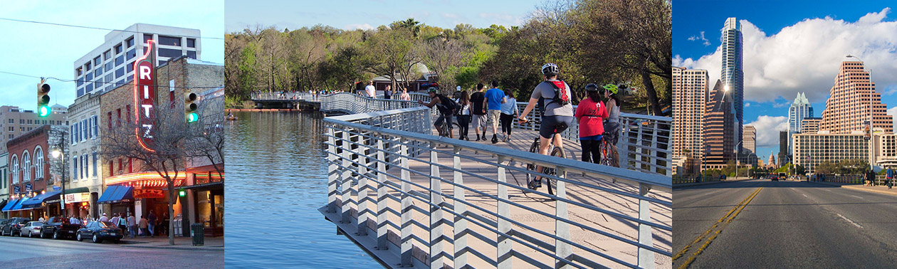

Austin, TX is known for its entrepreneurial spirit, celebration of personal freedom, vibrant music, film and art scene, and a thriving economy thanks to technology, engineering and health care industries. Throw in a glittering lake running through the center of the city, big blue skies, gleaming Texas sunshine and the natural beauty of the surrounding Hill Country. Add an open-minded sense of community, a serious commitment to breakfast tacos and a deep appreciation for all kinds of people, and you've got Austin, TX. Plan your trip to Austin today.
-
Austin Events around HCOMP
- Saturday, October 29, 2016: Arriving early? Watch UT Football take on Baylor.
- Thursday, November 3, 2016: Staying for workshops? Consider stopping by First Thursday that evening on South Congress.
Places to See in Austin

Popular, trendy area of downtown Austin known for clubs, live music and unique restaurants.
Home to the Austin Nature and Science Center, Botanical Gardens, Hillside Theatre and the Zephyr.
Home to eclectic shops and retro clothing stores and the very popular First Thursday event each month.

The 900ft pool was formed when Barton Creek was dammed up, so it has a natural rock and gravel bottom.
Bob Bullock Texas State History Museum
The story of Texas is told through films and exhibits; home to Austin’s only IMAX theater.
The massive pink granite dome rising above Central Texas has drawn people for thousands of years and has been described as Texas's "Ayer's Rock".